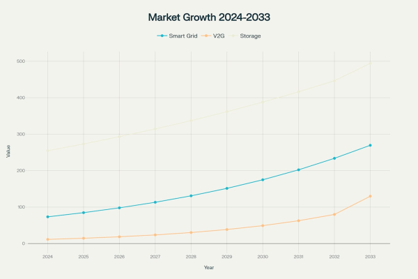
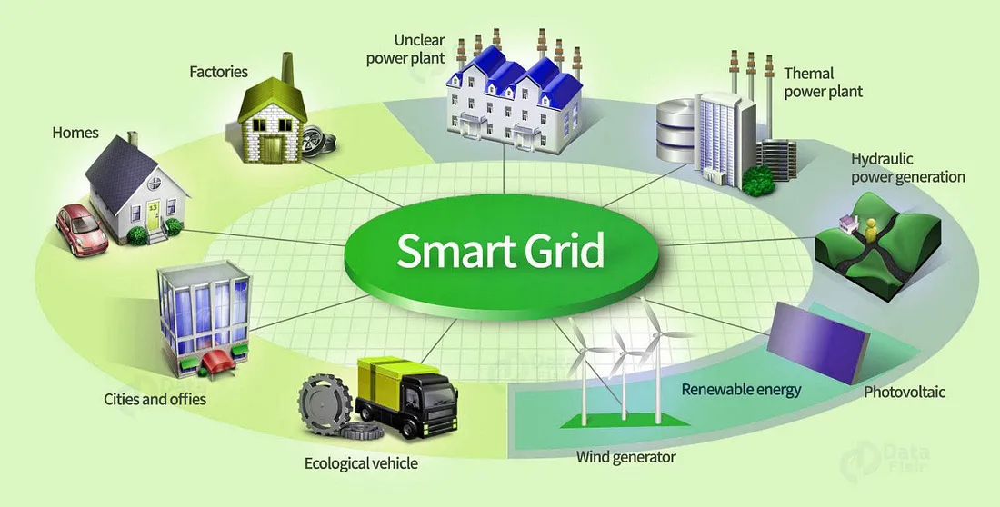
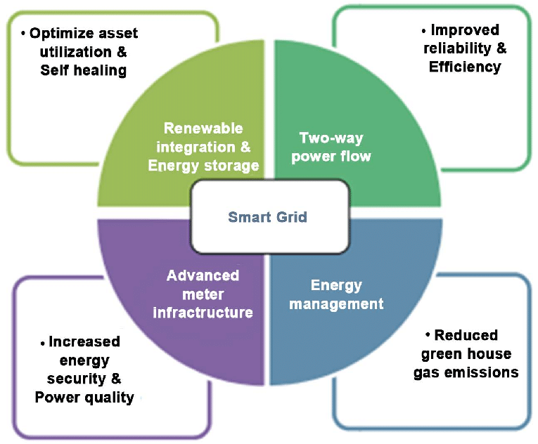
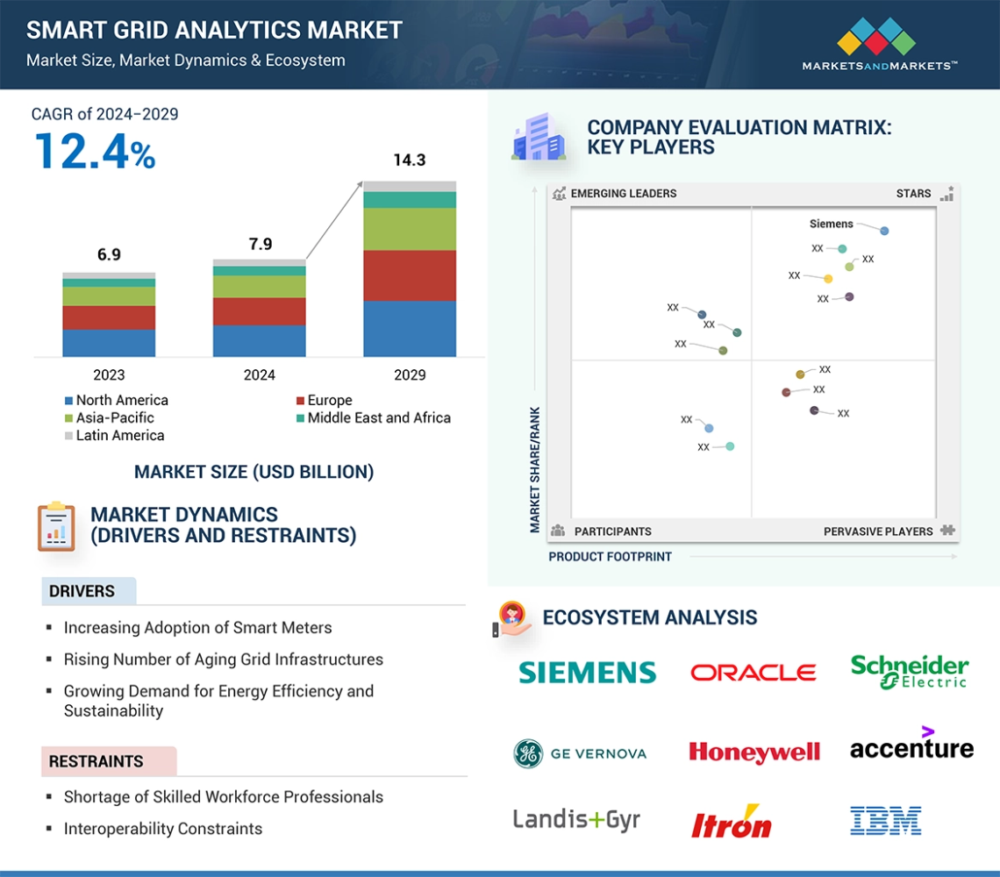
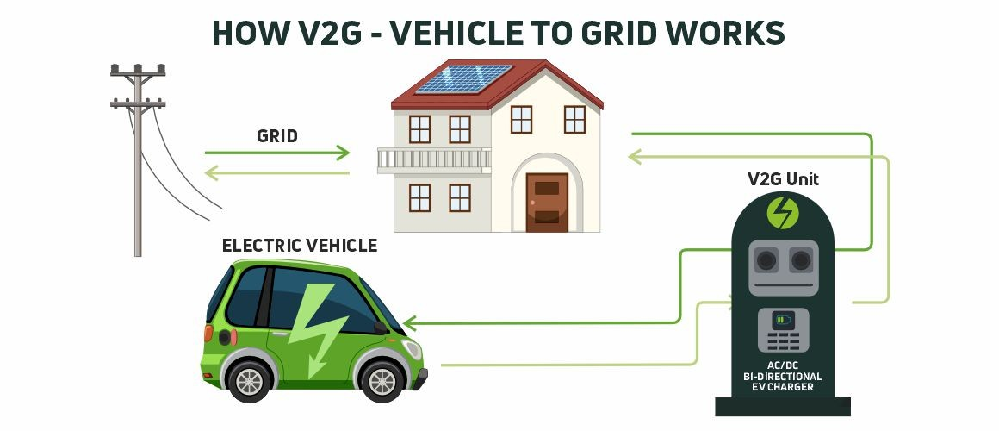
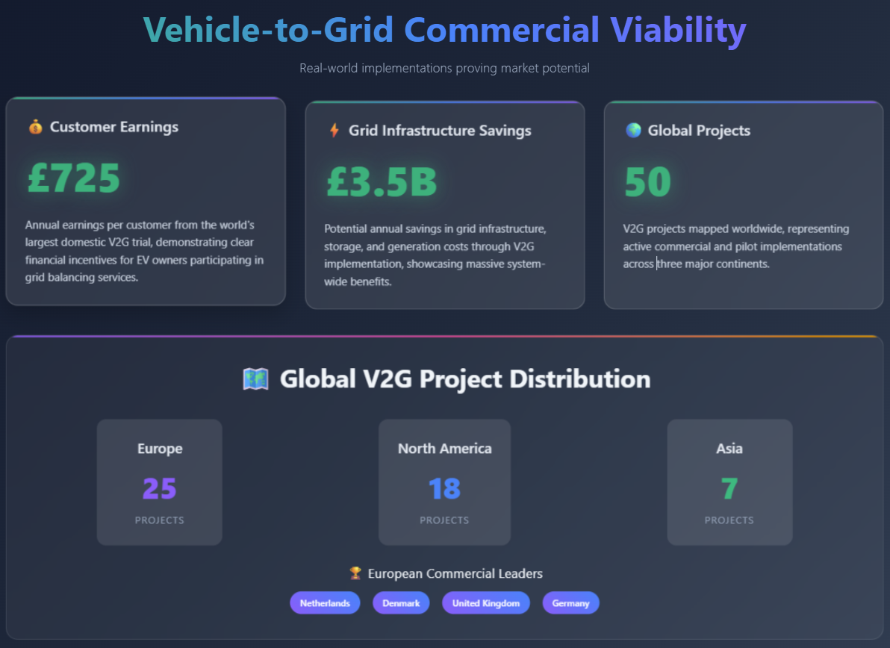
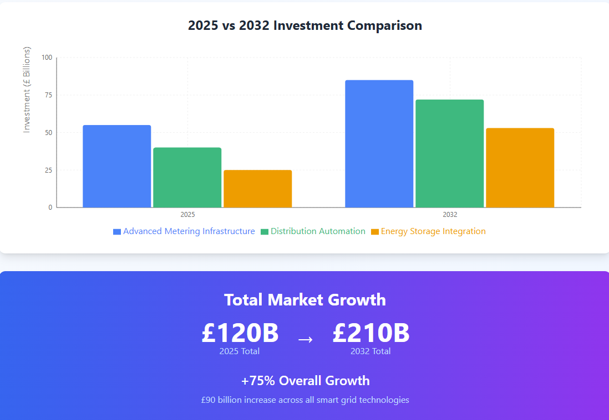
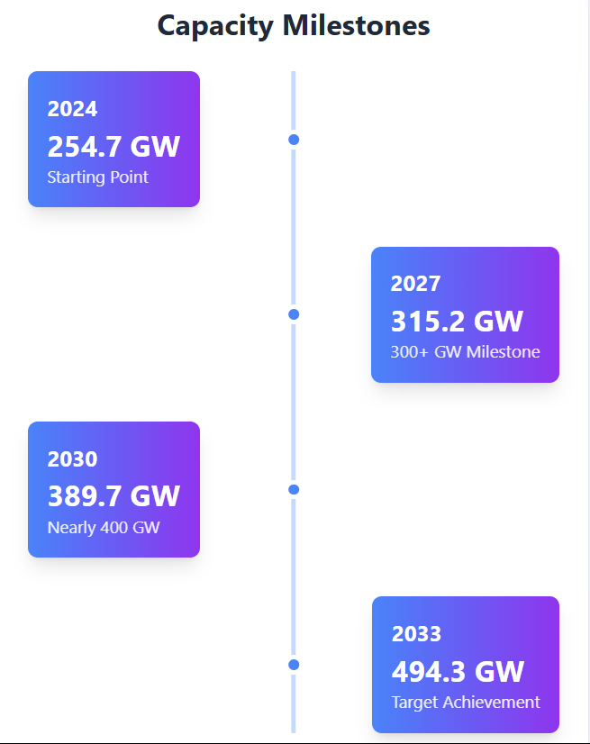
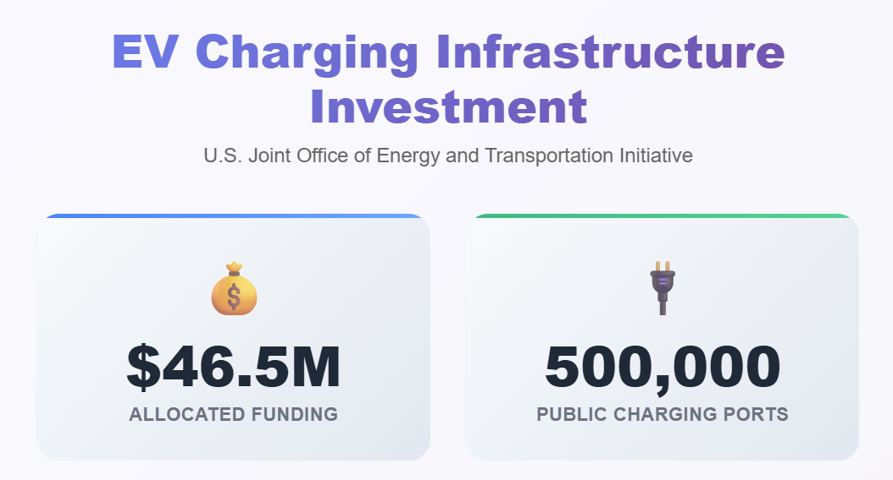
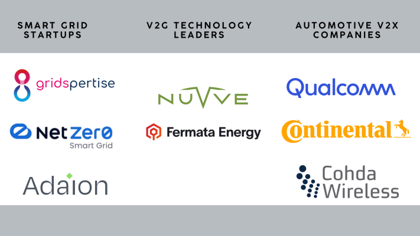

The convergence of smart grid technology and vehicle-to-grid (V2G) systems represents one of the most promising opportunities in the energy sector today. As the world transitions toward renewable energy and electric vehicle adoption accelerates, these interconnected technologies are positioned to transform how we generate, distribute, and consume electricity. With the global smart grid market projected to reach $269.5 billion by 2033 and the V2G market expected to surge to $129.83 billion by 2034, this sector presents unprecedented investment opportunities.

Understanding Smart Grid Technology
What is a Smart Grid?
A smart grid is an enhanced electrical network that uses digital information and communication technologies to monitor and manage electricity flows from generation to consumption points in real-time. Unlike traditional power grids, smart grids enable bidirectional communication and incorporate distributed intelligence to optimize operations.
The U.S. Energy Independence and Security Act of 2007 defined smart grids with ten key characteristics, including increased use of digital controls, dynamic optimization of grid operations, integration of distributed resources, and deployment of smart technologies for real-time monitoring1. These systems leverage IoT devices, sensors, and advanced software to better match electricity supply and demand while maintaining grid stability.

Core Benefits of Smart Grid Implementation
Smart grids deliver significant advantages across multiple dimensions:
- Enhanced Reliability: Advanced monitoring systems detect outages and system issues early, reducing downtime and improving service quality
- Improved Energy Efficiency: Real-time usage data enables better supply-demand matching and allows consumers to shift usage to off-peak hours
- Renewable Integration: Smart grids effectively balance fluctuating inputs from solar and wind sources, supporting the transition to cleaner energy
- Reduced Operational Costs: Automated systems minimize the need for manual inspections and emergency repairs
- Lower Carbon Emissions: By optimizing energy production and reducing waste, smart grids contribute to environmental sustainability

Smart Grid Market Growth Trajectory
The smart grid market is experiencing robust expansion, driven by increasing energy efficiency demands and supportive government policies. The global market reached $73.3 billion in 2024 and is projected to grow at a compound annual growth rate (CAGR) of 15.6% through 2033. This growth is fueled by the integration of renewable energy sources, rising electric vehicle adoption, and the need for grid modernization.
Investment trends indicate strong momentum across key technology segments, with global smart grid investments expected to exceed £450 billion by 2032. Advanced metering infrastructure, distribution automation, and energy storage integration are leading investment categories.

Vehicle-to-Grid (V2G) Technology: The Game Changer
V2G Fundamentals
Vehicle-to-grid technology enables electric vehicles to interact bidirectionally with the power grid, allowing energy stored in EV batteries to be sent back to the grid during peak demand periods. This transforms electric vehicles from simple transportation assets into mobile energy storage units that can support grid stability.
V2G systems require bidirectional chargers that can convert direct current from EV batteries back to alternating current for grid use. When electricity demand is low, EVs charge their batteries, and during high-demand periods, smart technology reverses the flow to feed electricity back into the grid.

The Strategic Importance of V2G
V2G technology addresses critical challenges in the modern energy landscape:
- Grid Stability: EVs supply energy back to the grid during peak demand, stabilizing distribution networks and ensuring reliable energy access
- Renewable Energy Optimization: By storing surplus energy from renewable sources like solar power, V2G ensures clean energy is used efficiently
- Economic Benefits: V2G enables EV owners to earn money by selling stored energy back to the grid, with potential earnings of up to $725 per year
- Decentralized Energy Storage: V2G systems create distributed backup power networks, reducing grid strain and enhancing resilience
V2G Market Dynamics
The V2G market is experiencing explosive growth, with projections showing expansion from $11.42 billion in 2024 to $129.83 billion by 2034 at a CAGR of 27.51%. The U.S. V2G market alone was valued at $2.46 billion in 2024. This rapid growth is driven by increasing EV adoption, advances in battery technology, and the development of bidirectional charging infrastructure.

The Convergence Opportunity
Electric Vehicle Adoption Catalyst
The foundation for V2G success lies in accelerating electric vehicle adoption. Global EV sales are projected to rise from 6.6 million in 2021 to 20.6 million in 2025, with EVs expected to represent 23% of new passenger vehicle sales globally by 2025. China and Europe are anticipated to account for 80% of EV sales in 2025, creating substantial V2G potential.
Technology Advancement Enablers
Recent breakthroughs in battery technology are addressing key barriers to widespread adoption. Researchers have developed techniques enabling 10-minute EV battery charging, which could reduce battery sizes from 150 kWh to 50 kWh without causing range anxiety. This advancement dramatically reduces battery costs and critical raw material usage, enabling mass adoption of affordable electric vehicles.
Pilot Project Successes
Real-world V2G implementations are demonstrating commercial viability. The world's largest domestic V2G trial found that customers could earn up to £725 per year while providing grid balancing services. Research indicates V2G has the potential to save £3.5 billion annually in grid infrastructure, storage, and generation costs.
Globally, 50 V2G projects have been mapped, with 25 in Europe, 18 in North America, and 7 in Asia. European initiatives, particularly in the Netherlands, Denmark, UK, and Germany, are leading commercial development.

Investment Opportunities and Market Potential
Smart Grid Investment Landscape
Smart grid investments are accelerating across multiple technology segments. Advanced metering infrastructure investments are expected to grow from £55 billion in 2025 to £85 billion by 2032. Distribution automation investments will expand from £40 billion to £72 billion, while energy storage integration investments will surge from £25 billion to £53 billion over the same period.

V2G Business Models
V2G technology creates multiple revenue streams:
- Fleet Operations: Commercial fleets can generate additional revenue by participating in grid balancing programs while maintaining operational schedules
- Individual EV Owners: Private vehicle owners can earn income by selling stored energy during peak demand periods
- Utility Services: Utilities can leverage V2G as a cost-effective alternative to traditional grid infrastructure investments
Energy Storage Market Integration
The broader energy storage market provides additional context for V2G opportunities. Global energy storage systems capacity reached 254.7 GW in 2024 and is projected to reach 494.3 GW by 2033, growing at a 7.27% CAGR. This growth is driven by renewable energy integration requirements and grid modernization needs.

Challenges and Solutions
Technical Barriers
Several technical challenges must be addressed for widespread V2G adoption:
- Standardization Issues: Lack of clear guidelines regarding charging standards, communication protocols, and grid connection codes creates uncertainty for market participants
- Cybersecurity Concerns: Smart grid systems are vulnerable to cyberattacks, including malware, phishing, and distributed denial-of-service attacks
- Battery Degradation: Research indicates V2G usage can reduce battery lifespan, with some studies suggesting lifetime reduction to under 5 years
Regulatory and Policy Framework
Policy support is crucial for V2G development. Regulatory frameworks must address data security, privacy concerns, and grid integration standards. Recent developments, such as Karnataka's new open access regulations mandating smart meters and enabling renewable energy banking, demonstrate policy evolution.
Infrastructure Requirements
Successful V2G implementation requires substantial infrastructure development. The U.S. Joint Office of Energy and Transportation has allocated $46.5 million for EV charging infrastructure projects, supporting the development of a national network of 500,000 public EV charging ports by 2030.

Key Industry Players and Innovations
Leading Technology Companies
The smart grid and V2G ecosystem includes several key players:
- Smart Grid Startups: Companies like Gridspertise , NetZer0 Smart Grid , and ADAION are developing cloud-edge platforms, IoT smart meters, and grid operating systems
- V2G Technology Leaders: Nuvve Holding Corp. and Fermata Energy recently merged to create a comprehensive V2G platform, combining hardware, AI-driven software, and industry expertise
- Automotive V2X Companies: Qualcomm , Continental , and Cohda Wireless are developing vehicle-to-everything communication technologies that enable V2G functionality

Emerging Trends
Several trends are shaping the future of smart grid and V2G integration:
- Internet of Energy: IoT devices are being integrated into energy grids for real-time monitoring and control
- 5G Connectivity: Advanced communication technologies are enabling more sophisticated grid management
- Artificial Intelligence: AI-driven analytics are optimizing energy distribution and predicting grid behavior
- Blockchain Integration: Distributed ledger technologies are facilitating peer-to-peer energy trading
The Path Forward
Investment Recommendations
The convergence of smart grid and V2G technologies presents compelling investment opportunities across multiple sectors:
- Infrastructure Development: Investment in charging infrastructure, grid modernization, and energy storage systems
- Technology Innovation: Support for companies developing advanced battery technologies, grid management software, and V2G platforms
- Policy Advocacy: Engagement with regulatory bodies to develop supportive frameworks for smart grid and V2G deployment
Market Timing
Current market conditions favor smart grid and V2G investments. The shift from policy-driven to consumer-driven demand for electric vehicles, combined with declining technology costs and supportive regulatory frameworks, creates an optimal environment for market entry.
Conclusion
Smart grid and vehicle-to-grid technologies represent a transformative opportunity in the global energy transition. With combined market potential exceeding $400 billion by the mid-2030s, these interconnected technologies offer solutions to critical challenges in renewable energy integration, grid stability, and energy storage.
Success in this sector requires addressing technical challenges, developing supportive policy frameworks, and building robust infrastructure. However, early movers who can navigate these challenges stand to benefit from one of the most significant opportunities in the modern energy landscape. The convergence of smart grids and V2G technology is not just the next big opportunity—it's the foundation for a sustainable, resilient, and efficient energy future.